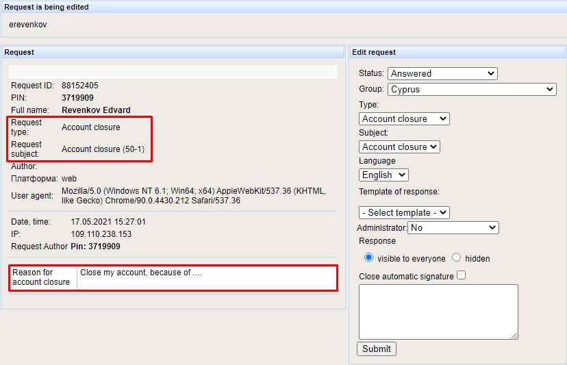
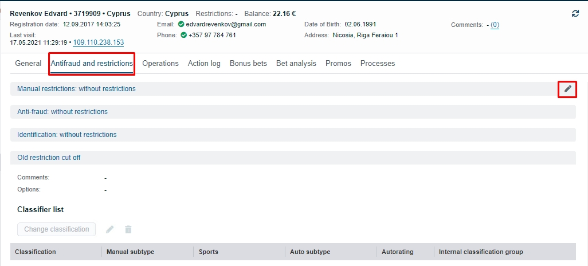
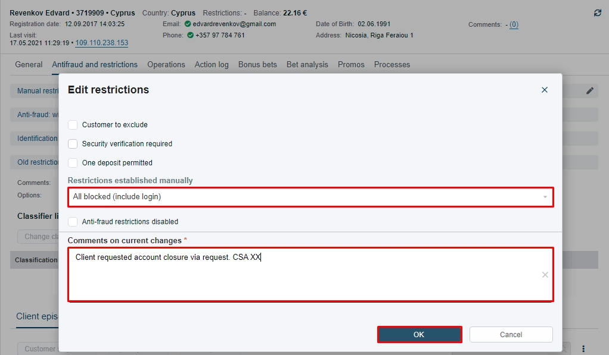

To close customer's account:
1. Forward information to the group chat.
2. Once you receive a confirmation, proceed with the steps.
3. Open customers account, select "Antifraud and restrictions" section and click on pencil symbol.
4. In the new window click on the drop up menu and select "All Blocked (include login)", add the comment and click "OK"
